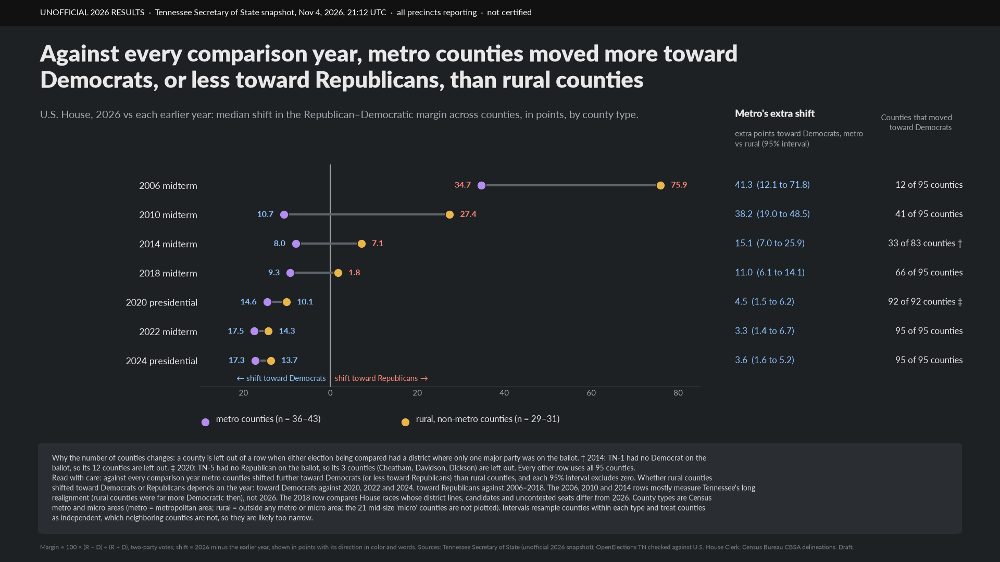
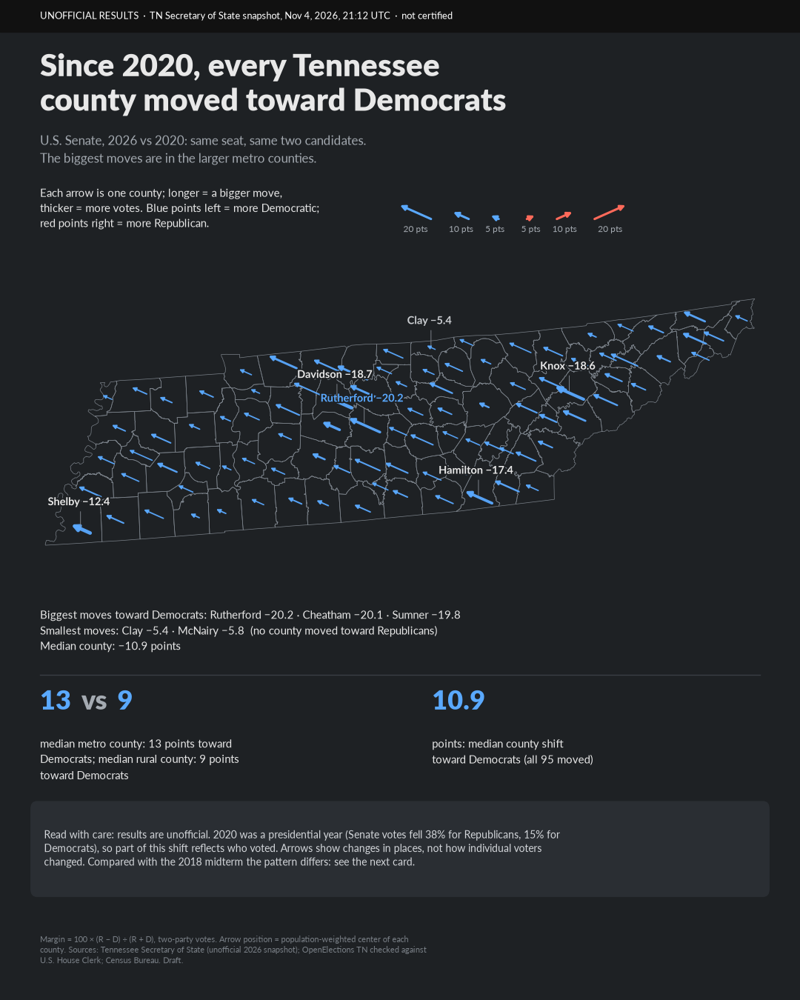
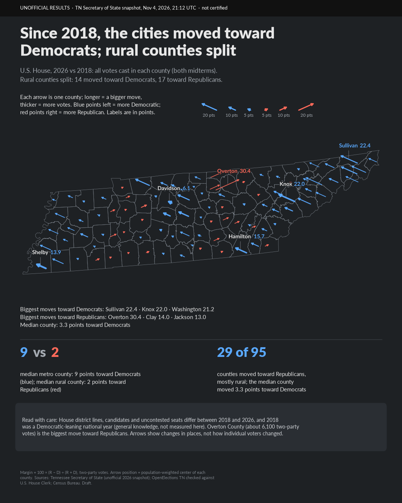
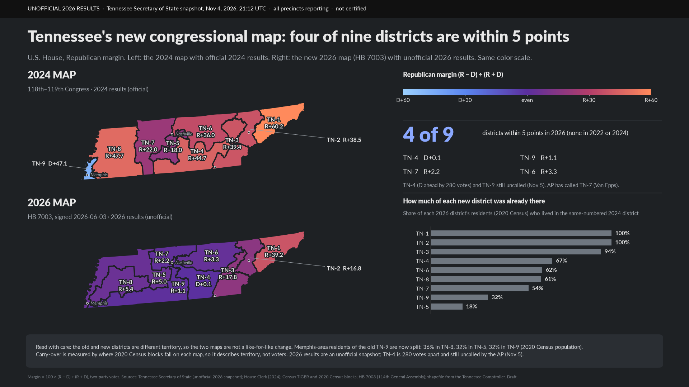
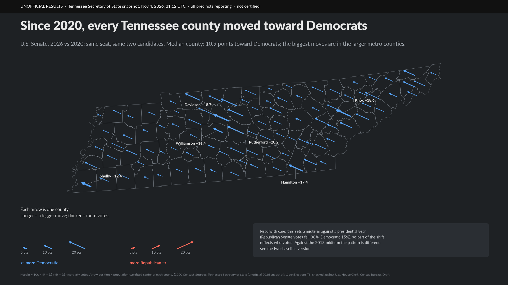
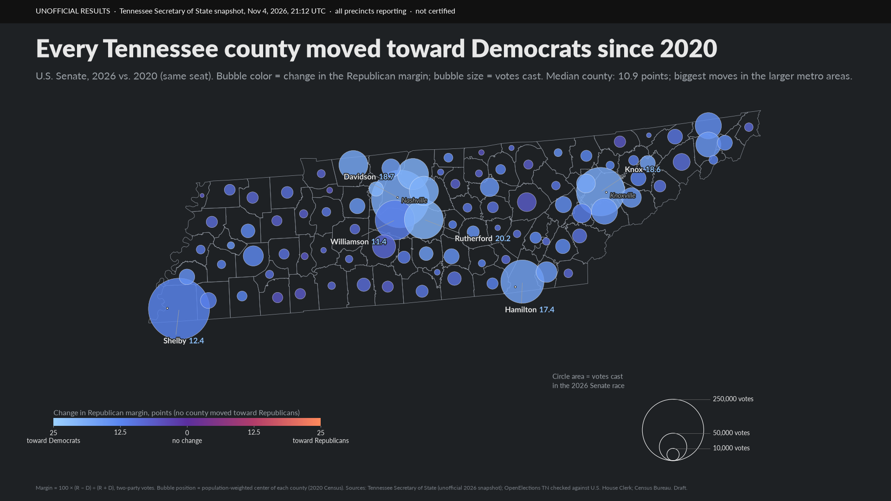

Tennessee 2026 election maps (draft)
Maps from a work-in-progress analysis of Tennessee elections, 2000–2026. The size of the 2026 shift depends heavily on the comparison year: it is large against 2020, 2022 and 2024 and much smaller against the 2018 midterm, where the cities moved toward Democrats and rural counties split. The one result that holds against every comparison year is that metro counties moved further toward Democrats than rural counties. Results shown are an unofficial election-night snapshot and will change as counties canvass and the state certifies. This page is a draft: nothing here is a final conclusion.
![Two maps of Tennessee counties, each county drawn as an arrow. Arrows point left where Democrats gained on Republicans and right where Republicans gained; longer arrows are bigger moves and thicker arrows are counties with more votes. Left map: the 2026 U.S. Senate race compared with 2020 (same seat, same two candidates); every arrow points left. Right map: 2026 U.S. House votes compared with 2018; urban counties point left, while many rural counties are short red arrows pointing right. Under each map: the three biggest moves toward each party and the median county. Below: the Democratic share of the two-party U.S. House vote (40% in 2018, 35% in 2022, 34% in 2024, 45% in 2026), median county shifts by county type, and four of nine House districts decided by under 5 points in 2026.](img/hero_arrows_16x9.png)
Left: U.S. Senate, 2026 vs 2020: 95 of 95 counties moved toward Democrats; median 10.9 points; biggest moves Rutherford, Cheatham and Sumner. Right: U.S. House, 2026 vs 2018: 66 counties moved toward Democrats and 29 toward Republicans (biggest: Overton, a county of about 6,100 two-party votes); median 3.3 points toward Democrats; the median metro county moved 9.3 points toward Democrats; rural counties split, 14 toward Democrats and 17 toward Republicans. From 2020 to 2026 Republican Senate votes fell 38% and Democratic votes 15%, so part of the 2020 comparison reflects who voted in a midterm versus a presidential year.
Open full size

The gap is negative in all seven rows and its 95% interval excludes zero each time (from -3.3 points against 2022 to -41.3 against 2006). Whether rural counties moved toward Democrats or Republicans depends on the year. Intervals treat counties as independent, which neighbors are not, so they are likely too narrow.
Open full size

Median county shift: 10.9 points toward Democrats. See the caution about midterm versus presidential-year electorates.
Open full size

29 of 95 counties moved toward Republicans; median county 3.3 points toward Democrats. House district lines, candidates and uncontested seats differ between 2018 and 2026.
Open full size

Old and new districts cover different territory, so the two maps are not a like-for-like change. As of Nov 5 the AP has called TN-7 for Matt Van Epps and had not called TN-4 or TN-9 (per Google's AP results panels pasted by the project owner).
Open full size

Arrow length = change in the Republican-minus-Democratic margin; thickness = votes cast. Position = population-weighted center of each county (2020 Census).
Open full size

Circle area key: 250,000, 50,000 and 10,000 votes. Compared with the 2018 midterm the pattern is different (see the arrow maps).
Open full size
Page generated 2026-11-05 17:13 UTC. Separate from the 2026 margin-maps page at the site root.